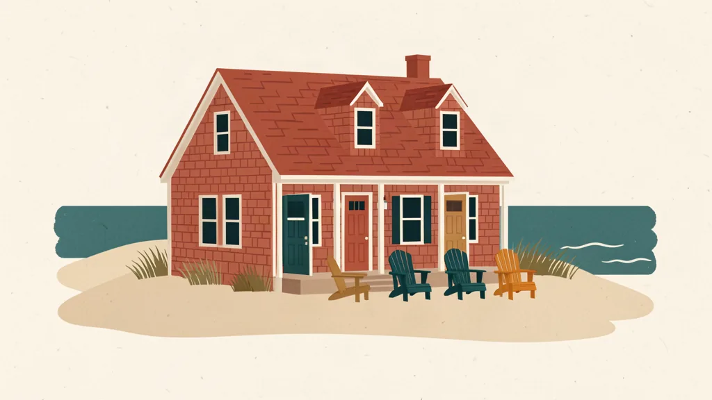

Guides to sharing a vacation home
Practical guides for everyone who shares a vacation home, whether family or friends: how to split the calendar, write house rules everyone agrees on, and handle the situations that come up over the years.
Start here

How to share a vacation home with family: five ways to split the calendar
Five common ways families divide time at a shared vacation home, what each one is good at, and how to choose before you pick a tool.
By Dan·Publishes on launch day
Splitting the calendar
How families divide weeks, holidays, and the nights nobody uses.

Who gets the Fourth of July? A holiday rotation for a shared vacation home
How families share holiday weeks at a vacation home, with rotation examples for three and four groups you can copy.
By Dan·Publishes on launch day

When one family never uses the vacation home
What to do when one household in a shared vacation home rarely or never comes: how to talk about it and how unused time can reach someone else.
By Dan·Publishes on launch day
Replacing the family spreadsheet: a vacation home calendar template
Rules and agreements
House rules, written plans, and the yearly meeting that keeps them current.

Family cabin rules: a template your whole family can agree on
A copy-ready set of house rules for a shared family cabin or vacation home, covering stays, guests, pets, spending, and the checkout list.
By Dan·Publishes on launch day
The calendar clauses of a shared vacation home agreement
Running the annual vacation home meeting
Family and friends
Siblings, friends who bought a place together, growing families, and keeping everyone involved.

Inheriting a vacation home with siblings: making a schedule that works
When siblings inherit a family vacation home together, these are the scheduling questions to settle first, and the ones to take to a professional.
By Dan·Publishes on launch day
How to share a vacation house with friends
Getting every household to take part
Five generations, one house
Choosing a tool
When a shared calendar is enough, and when a family wants more.
SplitHaus vs a shared Google Calendar
Common questions
What is the simplest way to share a vacation home?
For two or three groups, a rotation of equal blocks with a release date for unused time is the easiest to explain and keep track of. Five ways to split the calendar
What should family cabin rules cover?
How many people can stay, guests and pets, what anyone can spend without asking, the checkout list, and how the rules change. The family cabin rules template
How do siblings share an inherited vacation home?
Agree who shares it, how much time each household gets, how holidays work, and who looks after the house. Take ownership and tax questions to a professional. Inheriting a vacation home with siblings
Where do we start?
Answer a few questions together and write the answers down. The free Shared House Playbook walks you through them one at a time. Open the Shared House Playbook
Make your own house plan
The free Shared House Playbook walks everyone who shares the house through these decisions, one question at a time, and turns the answers into a one-page plan.
Open the Playbook